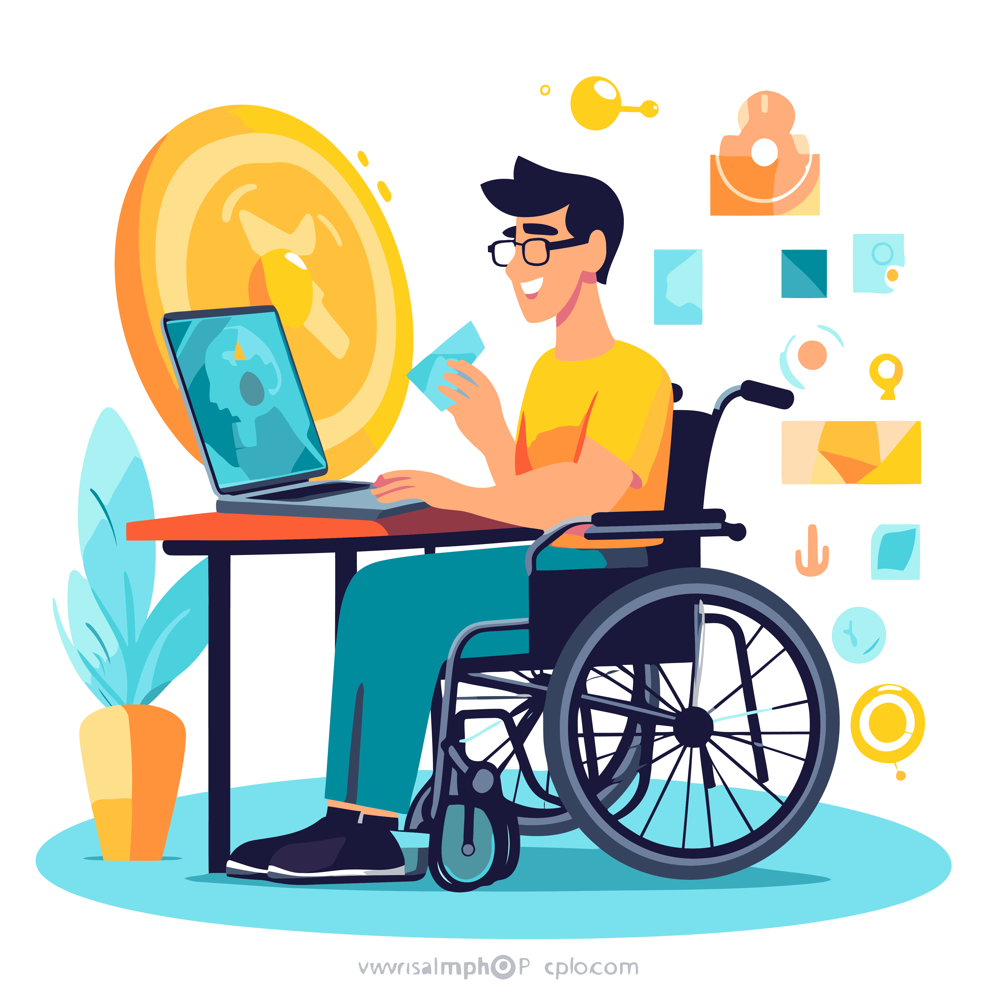
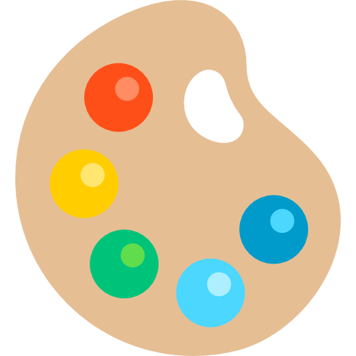
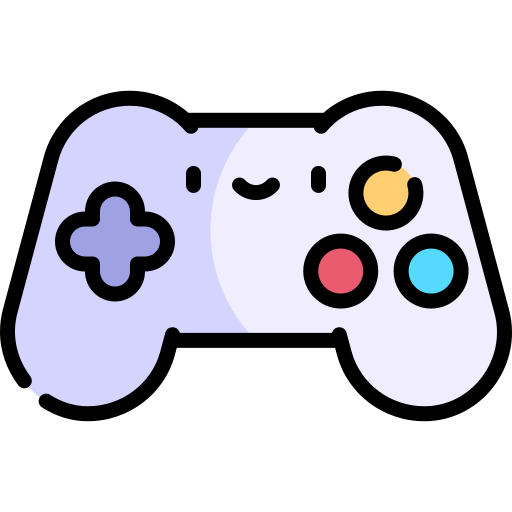

Experience Accessibility in Gaming
What happens when a game isn’t designed for you? Explore interactive challenges that simulate visual, motor, colour perception, and hearing impairments to understand why accessibility features matter.
About This Project
Inclusive Play is an educational web project designed to raise awareness of accessibility in gaming. Rather than creating accessible games for disabled users, this project encourages non-disabled players to temporarily experience barriers that many gamers face every day.
Through interactive simulations, users encounter gameplay scenarios affected by blurred vision, colour perception limitations, motor impairments, and hearing challenges. The aim is to build empathy and demonstrate why inclusive design is essential in modern game development.
Accessibility in gaming is not a niche feature — it is a fundamental part of inclusive design. As the gaming industry continues to grow, so does the responsibility to ensure that games can be experienced by as many players as possible.

Why Accessibility in Gaming Matters
Millions of people worldwide live with visual, motor, auditory, or cognitive impairments. Many modern games rely heavily on fast reactions, colour-based cues, precise motor control, and audio feedback.
Without accessibility features such as colour-blind modes, subtitles, remappable controls, scalable text, or alternative input methods, some players are excluded from fully enjoying gaming experiences.
By simulating these challenges, this project highlights how small design decisions can either create barriers or remove them.
Empathy Through Simulation
Simulating barriers allows non-disabled players to understand exclusion in digital spaces.
Design Impacts Inclusion
Small interface decisions can determine whether a game is playable or inaccessible.
Accessibility Benefits Everyone
Features like subtitles and scalable text are widely used beyond their original intent.
Impairments Explored in This Project
The simulations on this website focus on four accessibility areas that can affect gameplay: visual impairment, colour vision deficiency, motor impairment, and hearing impairment. Each section explains what barrier is being explored and why it matters in game design.
Visual Impairment
Visual impairments can affect how clearly a player sees text, images, objects, or interface elements. In games, poor contrast, small text, visual effects, and unclear layouts can make important information difficult to read or understand.
The blurred vision simulation shows how reduced clarity can affect gameplay and highlights the importance of scalable text, strong contrast, clear visuals, and simple interface design.

Colour Vision Deficiency
Colour vision deficiency affects how some users perceive colours. This can become a barrier when games rely only on colour to show important information, such as warnings, teams, buttons, or correct answers.
The colour-based simulation demonstrates why games should use additional indicators, such as labels, icons, patterns, or shapes, instead of relying on colour alone.

Motor Impairment
Motor impairments can affect movement, reaction speed, accuracy, or the ability to use a mouse or keyboard comfortably. Games that require fast reactions or precise controls can be difficult for players with limited motor control.
The motor simulation highlights the value of keyboard support, larger buttons, adjustable controls, slower timing options, and alternative input methods.
Hearing Impairment
Hearing impairments can affect how players receive audio information. Games often use sound effects, voice lines, or music cues to guide players, but this can exclude users who cannot hear them clearly.
The hearing simulation shows why visual feedback, subtitles, captions, and alternative cues are important for making games more accessible.
Accessibility Challenge Games
Each challenge below focuses on a different impairment. These simulations are not intended to replicate lived experiences, but to provide insight into how design decisions influence accessibility.
Blurred Vision Challenge
Complete tasks while your screen is visually distorted, demonstrating the importance of clarity, contrast, and scalable interface elements.
Colour Clash
Identify colours under simulated colour-blind overlays. This challenge highlights why relying solely on colour for communication can exclude players.
Motor Control Challenge
Navigate gameplay with delayed or restricted controls, illustrating how alternative input methods and control customisation improve accessibility.
Silent Sound
Play without audio feedback to experience the importance of subtitles, visual cues, and alternative feedback systems for deaf and hard-of-hearing players.
Designing for Inclusion
Inclusive design benefits everyone. Features originally created for accessibility — such as subtitles, scalable text, and remappable controls — are now widely used by all players.
This project demonstrates that accessibility is not an optional enhancement, but a core component of ethical and user-centred game development.
By experiencing these simulations, players are encouraged to rethink how games are designed and advocate for more inclusive digital spaces.